Chapter 10 recovered a causal effect by assuming that the variables driving treatment were all observed, and then conditioning on them. That assumption is untestable and, in most settings, false — countries do not adopt policies for reasons that are fully captured by three indicators.
This chapter takes the opposite route. Rather than measuring the confounders, it uses timing to remove them: if a country’s unobserved characteristics are stable over a short window, then comparing that country to itself before and after differences them away. The remaining problem — that things change over time for everyone — is handled by a second comparison, against units that did not adopt.
Two differences, hence the name.
The chapter works through four examples, each adding one idea. A simulated affordable-housing policy observed in two periods, where the two differences can be seen doing their work against a known answer. The same city over six years, in two versions — one where the assumption holds and one where it fails — to show what an event study can and cannot reveal. And the course’s own data on national AI strategies, adopted by different countries in different years, where the modern estimators earn their place and the assumption cannot be examined at all. And simulated exporting firms, where neither matching nor difference-in-differences can work and a third design, an instrument, can — until its key condition fails.
The examples show the two designs at work. Two later sections then carry each one out from start to finish on new data: a staggered rollout analysed as a difference-in-differences, and a randomly drawn voucher used as an instrument.
John Snow · 1813–1858
Mapped cholera deaths in 1854 and read a natural experiment off the water supply — before the statistics existed to justify it.
unknown, Autotype 1856, published in 1887. Public domain, via Wikimedia Commons.
From the archive · Snow, 1855
John Snow is remembered for the Broad Street pump, which is the wrong story. The map of cholera deaths clustered around one pump was suggestive, but a sceptic could reply that the people near the pump were poorer, more crowded, and different in a dozen ways from those further off — the selection problem of chapter 10, in 1854.
His second study answered that objection, and it is the one that matters here. Two companies supplied water to overlapping districts of south London, their pipes running down the same streets so that neighbouring houses drew from different sources. In 1852 one of them, Lambeth, moved its intake upstream of the sewage outflows; the other, Southwark and Vauxhall, did not. Snow could therefore compare cholera mortality in households that differed in water supply but not, in any systematic way, in anything else — and compare the change over time between the two.
He called it “an experiment on the grandest scale”, and was explicit that its force came from the assignment: no one chose their supplier, the pipes had been laid years earlier for commercial reasons unrelated to the disease. That is the argument every difference-in-differences paper is still making. Snow made it before the germ theory of disease existed — he had no mechanism, only a design.
11.2 The two differences
Let \(\bar Y_{g,t}\) be the average outcome for group \(g\) in period \(t\), with \(g \in \lbrace\text{treated}, \text{control}\rbrace\) and \(t \in \lbrace\text{pre}, \text{post}\rbrace\). The estimator is
\[
\widehat{\text{DiD}}
=
\underbrace{\big(\bar Y_{\text{tr,post}} - \bar Y_{\text{tr,pre}}\big)}_{\text{change among the treated}}
-
\underbrace{\big(\bar Y_{\text{co,post}} - \bar Y_{\text{co,pre}}\big)}_{\text{change among the controls}} .
\]
The first difference removes everything time-invariant about the treated group, observed or not — its wealth, its institutions, its geography. The second estimates what would have happened anyway, and subtracting it removes any shock common to both groups.
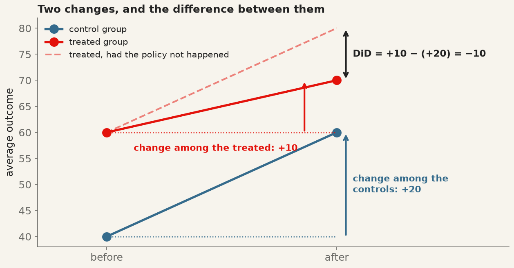
The two differences on one picture. The treated rose by 10 and the controls by 20; had nothing happened, the treated would have risen like the controls, to the dashed line. The gap between where they ended and that line is the estimate.
What licenses the subtraction is a single assumption, and it is worth stating in its exact form because the loose version is misleading.
Parallel trends — in the absence of treatment, the average outcome of the treated group would have followed the same trajectory as the control group. Formally, \[
\mathrm{E}[Y_{\text{tr,post}}(0) - Y_{\text{tr,pre}}(0)]
=
\mathrm{E}[Y_{\text{co,post}}(0) - Y_{\text{co,pre}}(0)] .
\] It is not an assumption that the groups are similar — they may differ by any amount in level — only that the gap between them would have stayed constant.
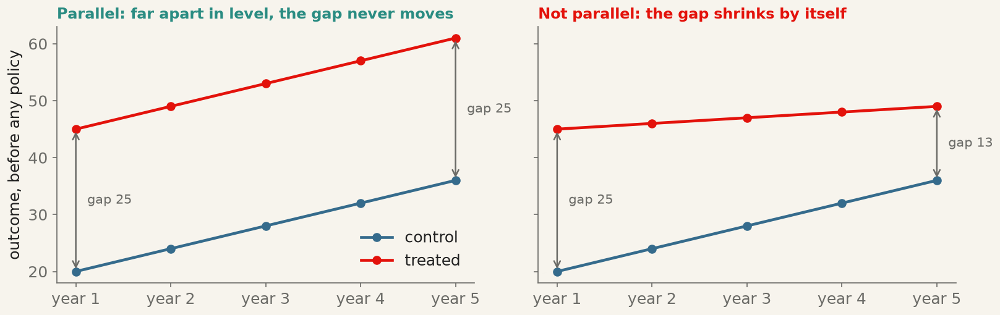
Parallel and not parallel, with no policy in either. On the left the groups are 25 apart and stay 25 apart; on the right the gap shrinks by itself, and a difference-in-differences would report the shrinkage as an effect.
The assumption concerns \(Y(0)\) for the treated group in the post period, which is precisely the counterfactual that does not exist. Parallel trends is therefore untestable, in the same way and for the same reason as chapter 10’s conditional independence. What can be examined is whether the trends were parallel before treatment, which is evidence about plausibility rather than a test of the assumption itself.
Note also that parallel trends is not invariant to how the outcome is measured. If two groups have parallel trends in levels they generally do not in logs, and vice versa, so the choice of scale is part of the identifying assumption rather than a presentational detail.
11.3 As a regression
The two-by-two table is easier to work with as a regression, and the regression form is one you have already met. With unit and period fixed effects,
where \(D_{it}\) is 1 when unit \(i\) is treated in period \(t\), the coefficient \(\delta\)is the difference-in-differences estimate. That is chapter 6’s two-way fixed effects specification with the treatment indicator in place of a continuous regressor: the unit effects absorb the first difference, the period effects the second.
The regression form buys three things — covariates, more than two periods and more than two groups, and standard errors. On the last, chapter 3’s finding returns with force: DiD data are panels, residuals are serially correlated within unit, and treating the country-years as independent understates the standard error badly. Clustering by unit is the minimum, and the classic demonstration of what happens otherwise is Bertrand, Duflo and Mullainathan’s, cited in chapter 3.
11.4 Example 1 · Did affordable housing lower nearby prices?
Governments subsidise affordable-housing projects, and critics argue that they lower the value of nearby homes (Ellen et al. 2007). Suppose a city opens several sites. A thousand houses are observed twice, before and after; half are near a site and half far from any. The data are simulated, so the truth is known: a site lowers nearby prices by $10,000. Near houses were cheaper to begin with, by about $15,000, and the whole market rose by $30,000 over the period.
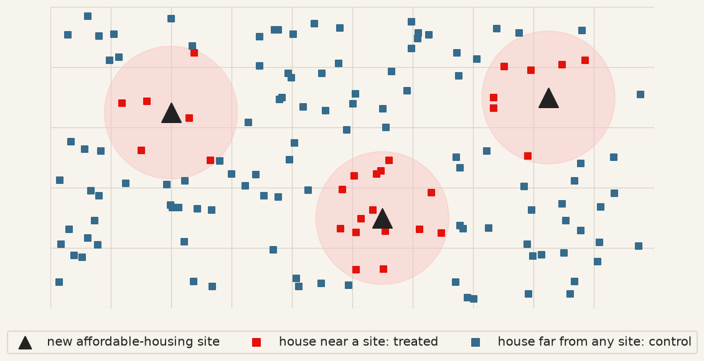
The design, schematically: houses within reach of a new site are treated, those beyond it are controls.
Run it: three comparisons, and the interaction regression
import warningswarnings.filterwarnings("ignore")import numpy as npimport pandas as pdimport statsmodels.formula.api as smfrng = np.random.default_rng(11)n =1000near = (np.arange(n) <500).astype(int)base =250-15* near + rng.normal(0, 20, n) # $ thousandsbefore = base + rng.normal(0, 10, n)after = base +30-10* near + rng.normal(0, 10, n)houses = pd.DataFrame({"house": np.r_[np.arange(n), np.arange(n)],"near": np.r_[near, near],"post": np.r_[np.zeros(n), np.ones(n)].astype(int),"price": np.r_[before, after]})m = houses.groupby(["near", "post"])["price"].mean().unstack()print(f"after only {m.loc[1, 1] - m.loc[0, 1]:+6.1f}")print(f"before-after {m.loc[1, 1] - m.loc[1, 0]:+6.1f}")print(f"DiD {(m.loc[1, 1] - m.loc[1, 0]) - (m.loc[0, 1] - m.loc[0, 0]):+6.1f} (truth -10)")did = smf.ols("price ~ near * post", data=houses).fit( cov_type="cluster", cov_kwds={"groups": houses["house"]})print(did.params.round(2).to_string())
after only -25.2
before-after +20.2
DiD -10.5 (truth -10)
Intercept 250.12
near -14.65
post 30.76
near:post -10.51
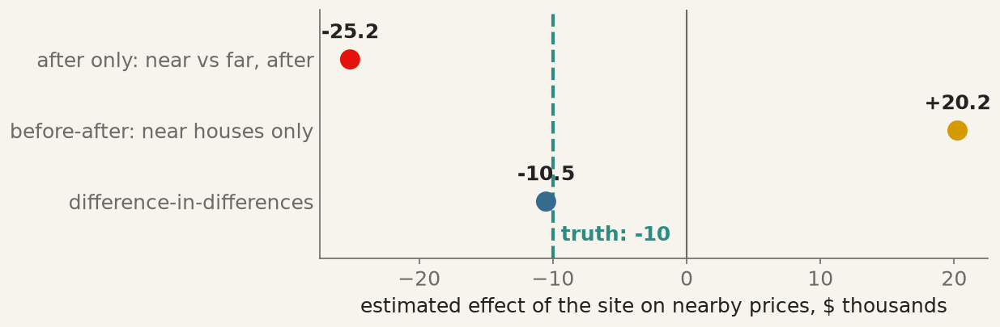
Three comparisons against the truth. The after-only comparison absorbs the gap that was always there; the before-after comparison absorbs the market’s rise; the difference of the two changes removes both.
Each naive comparison is wrong for a reason the two differences remove. Comparing near and far houses after the sites opened says −25: the effect plus the $15,000 gap that predates the sites. Comparing near houses before and after says +20: the effect plus the market’s rise. The difference of the two changes says −10.5. The regression returns the same number as the coefficient on near:post, and adds a standard error; the other coefficients are the cells of the table — \(\beta_0\) the far houses before, \(\beta_1\) the pre-existing gap, \(\beta_2\) the common change.
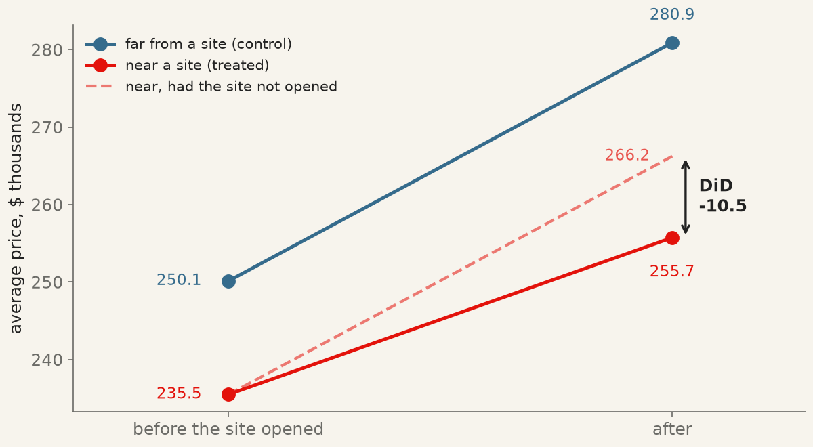
The four means and the counterfactual. Near houses start at 235.5; had the sites not opened they would have risen like the far ones, to 266.2. They reached 255.7.
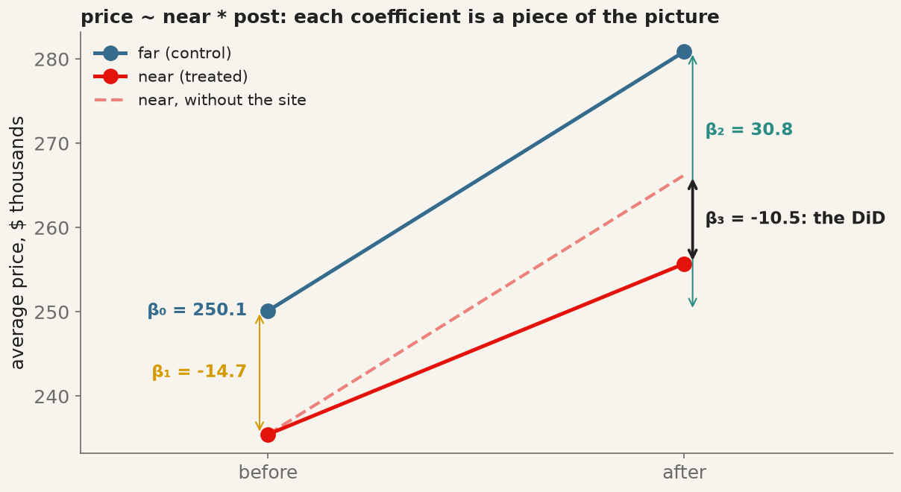
The regression’s coefficients on the same picture: \(\beta_0\) the far houses before, \(\beta_1\) the gap before, \(\beta_2\) the far houses’ rise, and \(\beta_3\) the distance from the counterfactual — the estimate.
Example 1 in three sentences. The after-only and before-after comparisons are each biased by something the design removes. The difference of the two changes recovers the effect, and in a regression it is the interaction. Nothing about why near houses were cheaper had to be measured; only that, without the sites, both groups would have moved together.
11.5 Example 2 · Were the trends parallel?
The same city, now observed every year from 2003 to 2008, with the sites opening in 2006 and the same true effect of −10. In version A, near and far houses would have risen together without the sites. In version B, the near neighbourhoods were already slipping, by $3,000 a year relative to the far ones, before any site existed. The two-period estimate compares 2005 with 2008; an event study estimates the near–far gap year by year, relative to 2005.
Run it: the event study in both versions
for version, drift in [("A", 0.0), ("B", -3.0)]: rng = np.random.default_rng(12) house_effect = rng.normal(0, 20, n) rows = []for year inrange(2003, 2009): price = (250-15* near + house_effect +8* (year -2003)+ drift * near * (year -2003)-10* near * (year >=2006) + rng.normal(0, 10, n)) rows.append(pd.DataFrame({"house": np.arange(n), "near": near, "year": year, "price": price})) prices = pd.concat(rows, ignore_index=True) by_year = prices.groupby(["year", "near"])["price"].mean().unstack() gap = by_year[1] - by_year[0] two = prices[prices["year"].isin([2005, 2008])].assign( post=lambda d: (d["year"] ==2008).astype(int)) est = smf.ols("price ~ near * post", data=two).fit().params["near:post"]print(f"version {version}: DiD 2005->2008 {est:+.1f}; event study", (gap - gap[2005]).round(1).to_dict())
version A: DiD 2005->2008 -11.1; event study {2003: -0.8, 2004: -0.7, 2005: 0.0, 2006: -11.1, 2007: -10.4, 2008: -11.1}
version B: DiD 2005->2008 -20.1; event study {2003: 5.2, 2004: 2.3, 2005: 0.0, 2006: -14.1, 2007: -16.4, 2008: -20.1}
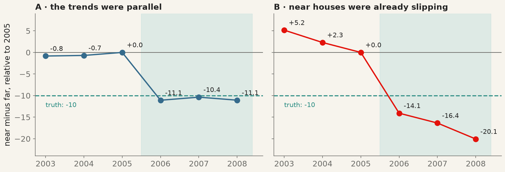
The event study in both versions. In A the pre-2006 points sit at zero; in B they lie on a line already falling, and the two-period estimate doubles.
In version A the years before the sites are flat and the estimate is −11. In version B the same two-period estimate is −20, double the truth, because the pre-existing slide of $3,000 a year is counted as the policy — and the event study shows it, as points that are already falling before 2006. That is what several pre-periods buy: not a test of parallel trends, which concerns the years after treatment, but evidence about its plausibility. The reference year is zero by construction; only the other pre-years are evidence.
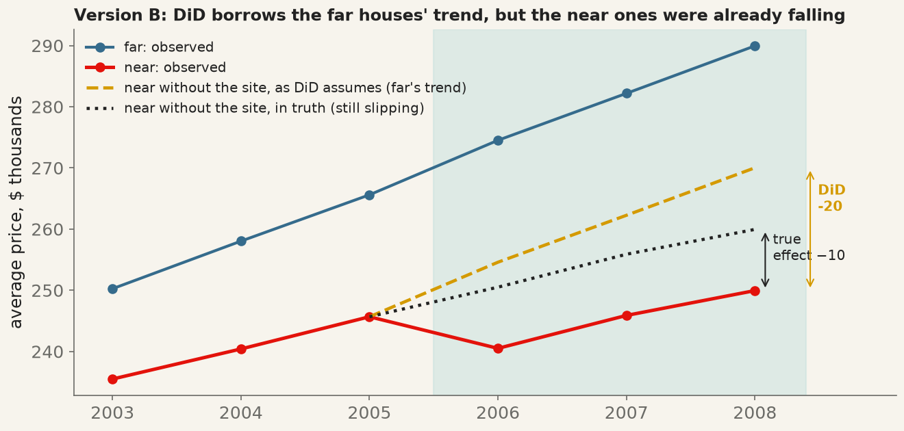
Why version B’s estimate is wrong. Difference-in-differences assumes the near houses would have risen like the far ones (gold); in truth they would have kept slipping (black). The true effect is the gap to the black line; the estimate is the gap to the gold one.
Example 2 in three sentences. When the trends were parallel, the years before the policy are flat and the estimate is right. When the treated group was already on a different path, the estimate absorbs that path, and the years before show it. A flat pre-trend makes the assumption plausible; it cannot make it true.
11.6 Example 3 · Do national AI strategies raise firms’ AI use?
The third example is the course’s own data: national AI strategies adopted by European countries between 2021 and 2023, and the share of firms using AI. It is generated with a known effect of 2.4 percentage points, so the estimators below can be scored, and it has the feature that makes modern difference-in-differences necessary — treatment arrives in different years for different countries.
11.6.1 When treatment arrives at different times
The clean two-by-two case has one treatment date. Real policies arrive in different years for different units — which is exactly what the course fixture contains — and for two decades the profession simply put a treatment dummy into a two-way fixed effects regression and read off the coefficient.
That turns out to be wrong in a way nobody noticed until recently. With staggered timing, the TWFE estimate is a weighted average of all the two-by-two comparisons available in the data, and some of those comparisons use already-treated units as controls for later-treated ones. When effects vary over time — when the policy’s impact grows, say — those comparisons subtract a treatment effect rather than a counterfactual trend, and the implied weights can be negative(Chaisemartin and D’Haultfœuille 2020; Goodman-Bacon 2021). A weighted average with negative weights can lie outside the range of the things being averaged, so the estimate can have the wrong sign while every underlying effect has the right one.
The remedy is to build the average yourself: estimate each cohort’s effect against clean controls — units not yet treated, or never treated — and aggregate with weights you chose (Callaway and Sant’Anna 2021; Sun and Abraham 2021).
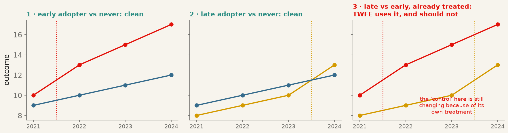
Which comparisons a two-way fixed effects regression makes. The first two are clean: the comparison group has no policy. The third uses an early adopter, still adjusting to its own policy, as the control for a late one.
11.6.2 The data, and what it will and will not support
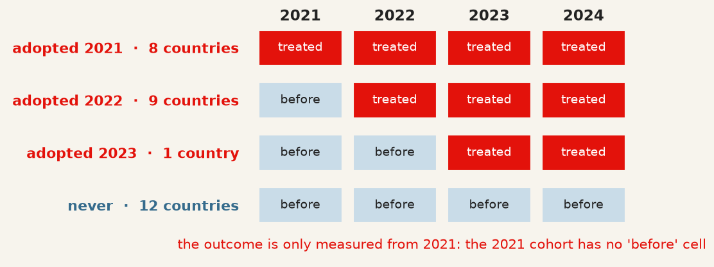
The adoption structure: which country-years are treated, and which are before adoption. The outcome is measured only from 2021, so the 2021 cohort has no before.
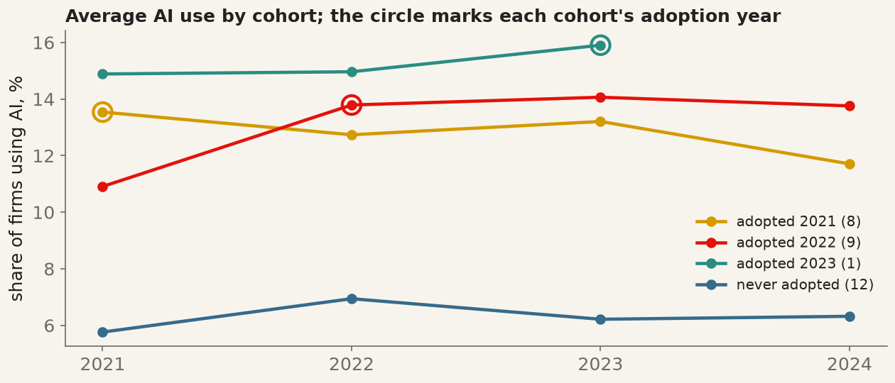
Average AI use by cohort. Adopters used AI about twice as much as never-adopters even before adopting — a difference in level, which the design allows. The circles mark adoption years.
Run it: the adoption structure
import sys, warningssys.path.insert(0, "../slides"); sys.path.insert(0, "..")warnings.filterwarnings("ignore")from plotstyle import setup, CLplt = setup()import numpy as np, pandas as pd, statsmodels.api as sm, qmibY, D ="ai_use_any", "has_ai_strategy"TRUE_EFFECT =2.4# from scripts/build_spine/make_fixtures.pywide = qmib.load("angle_c_country")# Adoption year must come from the FULL treatment series, not from the rows where# the outcome happens to be observed. Two countries adopted in 2022 and have a# missing 2022 outcome; taking the first year they are *seen* treated would put# them in the 2023 cohort and silently misdate the policy.adopted = wide[wide[D] ==1].groupby("geo")["time"].min()panel = wide[(wide["time"] >=2021) & wide[Y].notna()].copy()panel["cohort"] = panel["geo"].map(adopted).fillna(9999).astype(int)print(f"country-years with the outcome observed: {len(panel)}")print(f"the outcome exists only from {int(panel.time.min())} — "f"the AI module did not exist before it\n")print(f"{'cohort':>10}{'countries':>11} pre-periods available")for c insorted(panel["cohort"].unique()): n = panel.loc[panel["cohort"] == c, "geo"].nunique()if c ==9999:print(f"{'never':>10}{n:>11} —")else: pre = [int(t) for t insorted(panel.time.unique()) if t < c] shown =", ".join(str(t) for t in pre) if pre else"(none)"print(f"{c:>10}{n:>11}{len(pre)}{shown}")
country-years with the outcome observed: 112
the outcome exists only from 2021 — the AI module did not exist before it
cohort countries pre-periods available
2021 8 0 (none)
2022 9 1 2021
2023 1 2 2021, 2022
never 12 —
Three facts from that table decide what is possible, and each is a constraint a real analyst meets constantly.
The 2021 cohort cannot be used at all. The outcome series begins in 2021 and those countries adopted in 2021, so there is no pre-treatment observation. No before, no difference, no difference-in-differences. Their data are not weak evidence — they are no evidence for this design.
The 2023 cohort is one country. An estimate from it is a single country’s trajectory, and its standard error would be a fiction.
There is a trap in even getting this table right. Two countries adopted in 2022 and have no 2022 outcome recorded, so if the adoption year is taken from the rows where the outcome is observed — the obvious way to write it — they are assigned to the 2023 cohort and the policy is misdated by a year. The cohort must be read from the treatment series, which is complete, rather than from the analysis sample, which is not.
The 2022 cohort has exactly one pre-period. That is enough to compute the estimator and not enough to examine pre-trends, which needs at least two pre-periods to have a trend to look at.
11.6.3 The estimates
Run it: TWFE against cohort-by-cohort DiD
def twoby(cohort, pre, post):"""Clean 2x2: one cohort against the never-treated, two periods. Returns NaN when either group is unobserved in either period — a small cohort can simply be absent from a year, and that is not an estimate of zero. """ sub = panel[panel["cohort"].isin([cohort, 9999]) & panel["time"].isin([pre, post])] tr = sub[sub["cohort"] == cohort].groupby("time")[Y].mean() co = sub[sub["cohort"] ==9999].groupby("time")[Y].mean()ifnot {pre, post} <=set(tr.index) ornot {pre, post} <=set(co.index):returnfloat("nan")return (tr[post] - tr[pre]) - (co[post] - co[pre])# The specification two decades of papers used.design = pd.concat([ panel[[Y, D]].reset_index(drop=True), pd.get_dummies(panel["geo"], drop_first=True, dtype=float).reset_index(drop=True), pd.get_dummies(panel["time"], prefix="yr", drop_first=True, dtype=float).reset_index(drop=True),], axis=1)twfe = sm.OLS(design[Y], sm.add_constant(design.drop(columns=[Y]))).fit( cov_type="cluster", cov_kwds={"groups": panel["geo"].reset_index(drop=True)})print(f"{'estimator':44}{'estimate':>10}{'bias':>9}")print(f"{'the truth (from the generator)':44}{TRUE_EFFECT:>10.3f}{0.0:>9.3f}")print(f"{'two-way fixed effects, all cohorts':44}"f"{twfe.params[D]:>10.3f}{twfe.params[D] - TRUE_EFFECT:>9.3f}"f" (SE {twfe.bse[D]:.3f})")print(f"\nclean 2x2 estimates, cohort against never-treated:")clean = []for cohort, pre in ((2022, 2021), (2023, 2022)): n = panel.loc[panel["cohort"] == cohort, "geo"].nunique()for post inrange(cohort, 2025): v = twoby(cohort, pre, post) label =f" cohort {cohort} ({n} countr{'y'if n ==1else'ies'}), {pre}→{post}:"if np.isnan(v):print(f"{label} not estimable (a group is unobserved that year)")continue clean.append((cohort, post, v, n))print(f"{label}{v:+7.3f} bias {v - TRUE_EFFECT:+7.3f}")usable = [v for c, _, v, n in clean if n >1]print(f"\naveraging only the cohort with more than one country: "f"{np.mean(usable):+.3f} bias {np.mean(usable) - TRUE_EFFECT:+.3f}")
estimator estimate bias
the truth (from the generator) 2.400 0.000
two-way fixed effects, all cohorts 2.811 0.411 (SE 0.834)
clean 2x2 estimates, cohort against never-treated:
cohort 2022 (9 countries), 2021→2022: +1.701 bias -0.699
cohort 2022 (9 countries), 2021→2023: +2.702 bias +0.302
cohort 2022 (9 countries), 2021→2024: +2.292 bias -0.108
cohort 2023 (1 country), 2022→2023: +1.666 bias -0.734
cohort 2023 (1 country), 2022→2024: not estimable (a group is unobserved that year)
averaging only the cohort with more than one country: +2.232 bias -0.168
The two-way fixed effects estimate is close to the truth here, and it would be dishonest to stage a dramatic failure that the data do not produce. With four periods and effects that are roughly constant once treatment begins, the negative-weighting problem is mild. The point stands anyway: the estimate is close for reasons you can only check by decomposing it, and a paper reporting the TWFE coefficient alone offers no way to know whether its weights were benign.
The cohort estimates show what the decomposition looks like. The 2022 cohort — nine countries with one clean pre-period — gives +1.70, +2.70 and +2.29 in successive years, averaging +2.23 against a truth of +2.40, with the sampling noise you would expect from that many units. The 2023 cohort is a single country; its one estimable comparison happens to land at +1.67, and the second is not estimable at all because that country is absent from the final year. Both are reported rather than quietly dropped, because a cohort of one is a fact about the design and hiding it would make the evidence look stronger than it is.
11.6.4 The estimator has a name
The loop in that cell is not an improvisation. Estimating each cohort against a clean comparison group and aggregating with weights you chose is precisely the procedure of Callaway and Sant’Anna (2021), and there is a Python implementation of it, diff-diff. It is a young package and the reference implementation is still R’s did, so the first thing to do with it is what this section does: run it beside a calculation you already understand, and find out where the two disagree.
That is worth doing here for three reasons. It states out loud which cells it refuses to estimate. It attaches standard errors to the cohort estimates, which the hand-rolled loop had no way to produce. And it does disagree — in a way that turns out to be the hand-rolled version’s fault.
Run it: Callaway–Sant’Anna on the same panel
import diff_diff as dd# The estimator wants one column holding the adoption year, and 0 — not a# sentinel it would read as a year — for the never-treated.panel["g"] = panel["cohort"].replace(9999, 0)cs = dd.CallawaySantAnna(cluster="geo").fit( panel, outcome=Y, unit="geo", time="time", first_treat="g")gt = cs.to_dataframe()print(f"{'cohort':>7}{'year':>6}{'ATT(g,t)':>10}{'SE':>7}")for _, r in gt.iterrows(): g, t =int(r.group), int(r.time)if pd.isna(r.effect):print(f"{g:>7}{t:>6}{'—':>10}{'—':>7} dropped: {r.skip_reason}")else: tag =" ← pre-treatment, not an effect"if t < g else""print(f"{g:>7}{t:>6}{r.effect:>10.3f}{r.se:>7.3f}{tag}")print(f"\n{'overall ATT':>18}{cs.overall_att:>10.3f}{cs.overall_se:>7.3f}"f" bias {cs.overall_att - TRUE_EFFECT:+.3f}, {cs.n_clusters} clusters")for _, r in cs.aggregate("group").to_dataframe().iterrows(): n = panel.loc[panel["cohort"] ==int(r.label), "geo"].nunique()print(f"{'cohort '+str(r.label):>18}{r.att:>10.3f}{r.se:>7.3f}"f" {n} countr{'y'if n ==1else'ies'}")# The hand-rolled estimates and these ones differ. Recomputing each 2x2 over# only the countries observed in *both* of its two years isolates why.print("\nthe hand-rolled numbers, and what was wrong with them:")print(f"{'g,t':>9}{'as written':>12}{'same units':>12}{'ATT(g,t)':>10}")for g, t in ((2022, 2022), (2022, 2023), (2022, 2024), (2023, 2023)): sub = panel[panel["cohort"].isin([g, 9999]) & panel["time"].isin([g -1, t])] seen = sub.groupby("geo")["time"].nunique() bal = sub[sub["geo"].isin(seen[seen ==2].index)] tr = bal[bal["cohort"] == g].groupby("time")[Y].mean() co = bal[bal["cohort"] ==9999].groupby("time")[Y].mean() fixed = (tr[t] - tr[g -1]) - (co[t] - co[g -1]) att = gt.loc[(gt.group == g) & (gt.time == t), "effect"].iloc[0]print(f"{f'{g},{t}':>9}{twoby(g, g -1, t):>12.3f}{fixed:>12.3f}{att:>10.3f}")
cohort year ATT(g,t) SE
2021 2021 — — dropped: missing_period
2021 2022 — — dropped: missing_period
2021 2023 — — dropped: missing_period
2021 2024 — — dropped: missing_period
2022 2022 1.739 1.135
2022 2023 2.751 0.843
2022 2024 2.138 0.977
2023 2022 -1.126 0.440 ← pre-treatment, not an effect
2023 2023 1.842 0.553
2023 2024 — — dropped: zero_treated_control
overall ATT 2.196 0.782 bias -0.204, 30 clusters
cohort 2022 2.209 0.809 9 countries
cohort 2023 1.842 0.553 1 country
the hand-rolled numbers, and what was wrong with them:
g,t as written same units ATT(g,t)
2022,2022 1.701 1.739 1.739
2022,2023 2.702 2.751 2.751
2022,2024 2.292 2.138 2.138
2023,2023 1.666 1.842 1.842
The first table is this chapter’s own reasoning, produced by the estimator rather than argued for in advance. The 2021 cohort is dropped as missing_period — no pre-treatment observation exists, which is the conclusion reached two sections ago by reading the adoption structure. ATT(2023, 2024) is dropped as zero_treated_control, the same absent country the hand-rolled version returned NaN for. Neither refusal is buried inside a coefficient.
The standard errors are new. They come from the influence function of each group-time effect, clustered by country, and they carry through to the aggregate: an overall ATT of +2.20 with a standard error of 0.78, against a truth of 2.40. The interval covers it, which is the honest summary of what thirty countries over four years can establish about an effect of this size.
Read the cohort lines again. The nine-country cohort reports a standard error of 0.81. The one-country cohort reports 0.55. One country’s trajectory is not measured more precisely than nine countries’ — the smaller number is what comes out when there is no between-country variation left to estimate, and the software has no way to know that a cohort of one should not be reported at all. The estimator computes whatever you ask it for. Deciding what is worth asking for is still yours.
The last table is the uncomfortable one. The hand-rolled estimates and Callaway–Sant’Anna’s differ — +1.70 against +1.74, +2.29 against +2.14 — and the middle column says why. twoby averaged whichever countries happened to be present in each year, and this panel is not balanced: Malta and Estonia have no 2022 observation, Luxembourg no 2021, Spain no 2023, Croatia neither. The “before” mean and the “after” mean were therefore computed over different sets of countries, and part of what looked like an effect was the change in who was being averaged. Hold the units fixed and the estimator is reproduced to three decimals.
That failure is on this chapter’s own list — it is the composition change warning further down, committed in code written to demonstrate the method, on a dataset small enough to audit by hand. Which is the argument for using the package rather than the argument against it: not that it is cleverer, but that the choices the hand-rolled version made silently are ones it is forced to make out loud.
11.6.5 Pre-trends: what this data cannot tell you
Show the code
cohort =2022sub = panel[panel["cohort"].isin([cohort, 9999])].copy()sub["treated"] = (sub["cohort"] == cohort).astype(int)tr = sub[sub["treated"] ==1].groupby("time")[Y].mean()co = sub[sub["treated"] ==0].groupby("time")[Y].mean()years =sorted(sub["time"].unique())eff = [(t - cohort, (tr[t] - tr[2021]) - (co[t] - co[2021])) for t in years]fig, ax = plt.subplots(figsize=(6.8, 4.0))xs = [e for e, _ in eff]; ys = [v for _, v in eff]ax.axhline(0, color=CL.line, lw=1)ax.axhline(TRUE_EFFECT, color=CL.good, lw=1.4, ls=":", label="true effect")ax.axvline(-0.5, color=CL.muted, lw=1.2, ls="--")ax.plot(xs, ys, marker="o", ms=7, lw=1.8, color=CL.accent, zorder=3)ax.annotate("reference period\n(zero by construction)", (-1, 0), textcoords="offset points", xytext=(6, 26), fontsize=8, color=CL.muted)ax.set_xlabel("years since adoption"); ax.set_ylabel("estimated effect (pp)")ax.set_xticks(xs)ax.legend(frameon=False, fontsize=8.5, loc="lower right")fig.tight_layout()print(f"{'event time':>12}{'estimate':>11}")for e, v in eff: note =" reference — not evidence"if e ==-1else""print(f"{e:>12}{v:>11.3f}{note}")print(f"\npre-periods available for this cohort: "f"{sum(1for e, _ in eff if e <0)}")
event time estimate
-1 0.000 reference — not evidence
0 1.701
1 2.702
2 2.292
pre-periods available for this cohort: 1
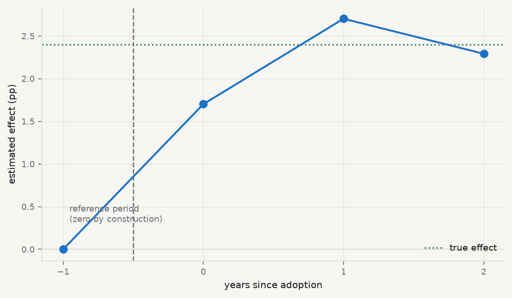
Figure 11.1: Event study for the 2022 cohort against the never-treated. Event time 0 is the year of adoption. The point at \(-1\) is the reference period and is zero by construction, not by evidence — with a single pre-period there is no pre-trend to examine.
An event study is the standard way to make parallel trends look plausible: plot the estimated effect at each period relative to adoption, and look for a flat line before treatment. Here the pre-treatment portion consists of a single point, which is the reference period and therefore exactly zero by arithmetic.
A flat pre-trend that contains one mechanically-zero point is not evidence of anything. This is not a defect of the analysis; it is a property of the data, and it means the identifying assumption of this chapter cannot be examined at all in this dataset. The honest report says so, states the estimate as conditional on an assumption that could not be checked, and treats the finding accordingly.
It is worth noticing how much weaker that is than what chapter 10 could do. There the assumption was also untestable, but the covariates could at least be shown to be balanced. Here, there is nothing to show.
11.6.6 How large a violation would it take?
“The assumption cannot be checked” is where this dataset leaves you. It is not where the literature leaves you. Rambachan and Roth (2023) changes the question: rather than testing parallel trends, ask how large a violation of it would have to be before the finding stops holding, and report that number. The output is a family of intervals indexed by how much post-treatment departure from parallel trends you are prepared to allow — measured, in the relative-magnitudes version, as a multiple \(M\) of the largest departure actually visible before treatment.
Run it: how much violation does the result survive?
es = cs.aggregate("event_study")print("the whole of the pre-treatment evidence in this dataset:")for _, r in es.to_dataframe().query("event_time < 0").iterrows():print(f" event time {int(r.event_time):>3}: {r.att:+.3f} "f"(SE {r.se:.3f}, p {r.p_value:.3f}), from {int(r.n)} cohort")print(f"\n{'M':>5}{'identified set':>22}{'95% robust CI':>22} rules out zero")for M in (0.0, 0.25, 0.5, 1.0, 2.0): h = dd.HonestDiD(method="relative_magnitude", M=M).fit(es)print(f"{M:>5.2f} [{h.lb:>7.3f},{h.ub:>7.3f}] "f"[{h.ci_lb:>7.3f},{h.ci_ub:>7.3f}] "f"{'yes'if h.is_significant else'no'}")
the whole of the pre-treatment evidence in this dataset:
event time -1: -1.126 (SE 0.440, p 0.016), from 1 cohort
M identified set 95% robust CI rules out zero
0.00 [ 2.212, 2.212] [ 0.613, 3.812] yes
0.25 [ 1.649, 2.776] [ 0.050, 4.375] yes
0.50 [ 1.086, 3.339] [ -0.513, 4.938] no
1.00 [ -0.040, 4.465] [ -1.640, 6.064] no
2.00 [ -2.293, 6.718] [ -3.892, 8.317] no
Two things to read off that, and the second matters more.
The pre-treatment evidence is a single number, from a single cohort, and that cohort is a single country. Germany adopted in 2023, so it is the only unit whose pre-period is something other than its own reference year, and its 2021→2022 change ran 1.13 points below the never-treated countries’. Everything in the table below rests on that one comparison. The 2022 cohort, nine countries strong, contributes nothing here at all — its only pre-period is the reference.
The sensitivity table then says: the result survives at \(M = 0.25\) and not at \(M = 0.5\). In words, if post-treatment departures from parallel trends could be as much as half the size of the one pre-treatment departure visible in the data, the interval already contains zero. That is a low breakdown point, and it ought to be — it is what an estimate resting on one country’s single pre-period is worth.
This is not a test, and nothing here has been tested. The honest sentence is “the finding requires post-treatment violations of parallel trends no larger than about a quarter of the single pre-treatment deviation we can observe, and we have one country from which to judge that.” A sensitivity analysis converts an untestable assumption into a statement about how much of it the result needs. That is real progress over asserting the assumption, and it is not the same thing as evidence for it.
Example 3 in three sentences. The adoption table decides what can be estimated before any regression is run: one cohort has no pre-period and another is a single country. Two-way fixed effects gives 2.81 and the staggered-robust estimator 2.20 with a standard error of 0.78, covering the truth. Parallel trends cannot be examined here, and the sensitivity analysis says how little violation the result can absorb.
11.7 Example 4 · Does exporting raise productivity?
Exporters are more productive than non-exporters in almost every economy where the comparison has been made, and the question that follows is the one Bernard and Jensen (1999) posed: is exporting the cause of the gap, its effect, or both? Firms may learn from foreign buyers and competitors; or the better firms may be the ones that export. The selection runs through something rarely measured well — the quality of management — and in a single cross-section there is no before and after to difference. Matching cannot see the confounder and difference-in- differences has nothing to difference. A third design is needed.
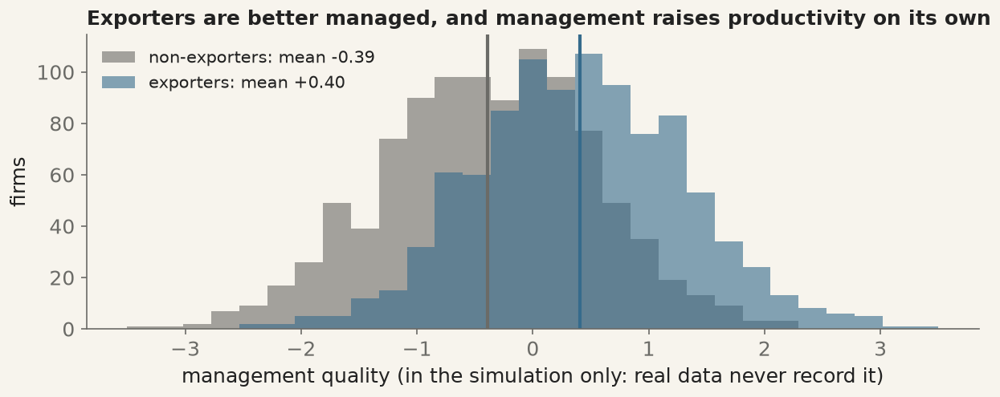
Management quality by export status, visible only because the data are simulated. Exporters are about 0.8 standard deviations better managed; that gap is what the naive comparison mistakes for an effect of exporting.
The remaining route is a variable that moves treatment from outside the system: an instrumental variable\(Z\). It identifies an effect when it satisfies three conditions (Angrist, Imbens, and Rubin 1996).
Relevance — \(Z\) actually moves the treatment. This is the first stage, and it is the only one of the three conditions the data can check.
Independence — \(Z\) is as good as randomly assigned, unrelated to the unmeasured causes of the outcome.
Exclusion — \(Z\) affects the outcome only through the treatment.
Here the candidate is distance to the nearest port. Firms far from a port export less, because shipping costs more; where a firm sits was settled by history, not by its managers; and — the claim that carries everything — distance matters for productivity only by changing who exports. The data are simulated, 2,000 firms, so the truth is known: exporting adds 5. In version A all three conditions hold. In version B remote firms also pay more for their inputs, so distance lowers productivity directly and the exclusion fails.
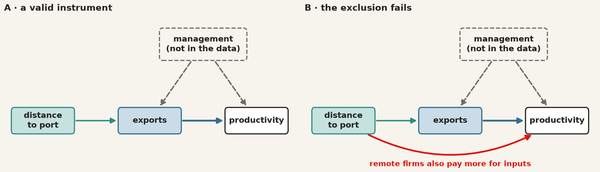
The instrument. Distance moves exporting; management, never observed, drives both exporting and productivity. In B, distance also reaches productivity directly.
If distance touches productivity only through exporting, its effect on productivity (the reduced form) must be its effect on exporting (the first stage) multiplied by the effect of exporting. So the effect is a ratio,
and two-stage least squares computes the same number with a correct standard error.
Run it: naive, the two stages by hand, and two-stage least squares
import statsmodels.api as smfrom statsmodels.sandbox.regression.gmm import IV2SLSfor version, direct in [("A", 0.0), ("B", -0.02)]: rng = np.random.default_rng(13) n_firms =2000 management = rng.normal(0, 1, n_firms) # never in the data distance = rng.uniform(0, 300, n_firms) # km to the nearest port exports = (0.8* management -0.01* distance + rng.normal(0, 1, n_firms) >-1.5).astype(int) productivity = (100+5* exports +6* management + direct * distance+ rng.normal(0, 5, n_firms)) firms = pd.DataFrame({"exports": exports, "distance": distance, "productivity": productivity}) gap = firms.groupby("exports")["productivity"].mean() first = smf.ols("exports ~ distance", data=firms).fit() reduced = smf.ols("productivity ~ distance", data=firms).fit() iv = IV2SLS(firms["productivity"], sm.add_constant(firms[["exports"]]), sm.add_constant(firms[["distance"]])).fit()print(f"version {version}: naive {gap[1] - gap[0]:5.2f} "f"first stage {first.params['distance']:.4f} (F {first.tvalues['distance'] **2:.0f}) "f"reduced form {reduced.params['distance']:.4f} "f"IV {iv.params['exports']:.2f} (SE {iv.bse['exports']:.2f}) truth 5")
version A: naive 9.96 first stage -0.0027 (F 543) reduced form -0.0124 IV 4.62 (SE 0.76) truth 5
version B: naive 11.56 first stage -0.0027 (F 543) reduced form -0.0324 IV 12.09 (SE 0.70) truth 5
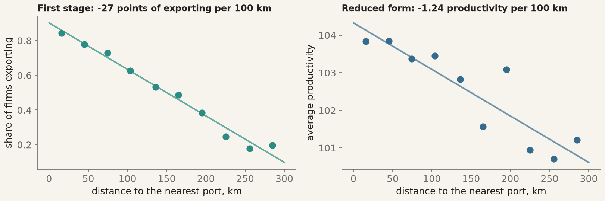
The two regressions behind the ratio, in version A. Each extra 100 km cuts the share of firms exporting by 27 points and productivity by 1.24; the ratio is 4.6.
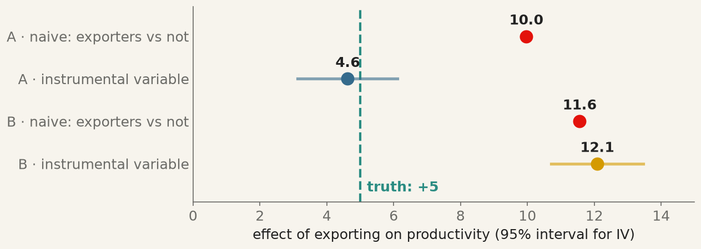
Naive and instrumental-variable estimates in both versions, against the truth.
In version A the naive comparison says 10, double the truth, because exporters are about 0.8 standard deviations better managed; the instrument gives 4.6 with a standard error of 0.76, covering the truth. In version B the first stage is exactly as strong — the F statistic of 543 is far above any conventional bar — and the estimate is 12.1, further from the truth than the naive comparison. Nothing in the output distinguishes the two versions, because the condition that failed is the one the data cannot test.
Two practical warnings. Running the second stage by hand — regressing the outcome on the fitted treatment with smf.ols — gives the right coefficient and the wrong standard error, since it ignores that the fitted values were estimated; use a two-stage routine. And what IV identifies is the effect on the units whose treatment the instrument actually moved — the compliers, here the firms whose export decision depends on their distance to a port — not on every firm. A weak first stage makes everything worse: the estimate becomes noisy and biased toward the naive one, which is why the F statistic is reported.
Example 4 in three sentences. When the confounder is unmeasured and there is no before and after, a variable that moves treatment from outside can still identify the effect, as the ratio of the reduced form to the first stage. With a valid instrument it recovers the truth where the naive gap was double. Good instruments are rare because the exclusion restriction is an argument, and when it fails the estimate can be worse than doing nothing.
11.8 Matching, difference-in-differences or an instrument?
The three designs of chapters 10 and 11 answer different worries, and each rests on an assumption the data cannot test.
Matching (chapter 10)
Difference-in-differences
Instrumental variable
Uses
comparisons on what was measured
changes within units over time
only the variation in treatment the instrument causes
Assumes
conditional independence
parallel trends
relevance, independence, exclusion
Needs
rich pre-treatment covariates, overlap
observations before and after
a variable that moves treatment from outside
Checkable part
balance, overlap
pre-trends, with several pre-periods
the first stage
Fails when
an unmeasured trait drives selection
the treated were already on a different path
the instrument has its own path to the outcome
Choose the design whose assumption can be argued best in the setting at hand, and say in words which assumption that is.
11.9 Doing it · A difference-in-differences study, from the panel to the sensitivity analysis
The four examples showed the two designs of this chapter working, and failing. This section and the next carry each one out from the first file to the reported number, on data that appear nowhere else in the chapter, because the order of the steps is most of the method and it is easier to see on a clean case.
A government opens export desks, one-stop offices for customs paperwork, in 12 regions in 2018 and in 10 more in 2021; 18 regions never get one. Does a desk raise the share of a region’s firms that export? Regions with a desk already exported more, for reasons nobody recorded, which rules out matching. The data are simulated, so the truth is known: a desk adds 2 points for every year it has been open, which is 6.1 on average over the treated years observed.
Step 1 · The panel, and the adoption table. A difference-in-differences needs a panel: the same units at several dates, one row per unit and date. The first thing to print from it is who was treated and when, because that table says which comparisons exist before any is made.
Run it: 40 regions over ten years, and who got a desk when
import matplotlib.pyplot as pltimport diff_diff as ddrng = np.random.default_rng(11)n_regions =40opened = np.r_[np.full(12, 2018), np.full(10, 2021), np.zeros(18)].astype(int) # 0 = neverlevel = rng.normal(30, 6, n_regions) +4* (opened >0) # regions with a desk exported more alreadyrows = []for year inrange(2014, 2024): years_open = np.where((opened >0) & (year >= opened), year - opened +1, 0) exporters = level +1.0* (year -2014) +2.0* years_open + rng.normal(0, 1.5, n_regions) rows.append(pd.DataFrame({"region": np.arange(n_regions), "year": year, "opened": opened,"desk": (years_open >0).astype(int),"exporters": exporters.round(1)}))desks = pd.concat(rows, ignore_index=True)print(desks.head(3).to_string(index=False))print(desks.groupby("opened")["region"].nunique().rename(index={0: "never"}).to_string())
region year opened desk exporters
0 2014 2018 0 34.7
1 2014 2018 0 42.5
2 2014 2018 0 43.0
opened
never 18
2018 12
2021 10
Both cohorts have years before their desk, four and seven, so a pre-period can be examined, and eighteen regions are never treated, so a clean control group exists at every date. That is a far better position than Example 3’s, and the table is how one knows.
Step 2 · Look before estimating.
Run it: the average outcome of each cohort, year by year
Figure 11.2: The share of firms exporting in the three groups of regions. The dashed lines mark the two openings. The groups sit at different heights before any desk opens, which is selection and does not matter; they move in parallel until their own desk opens, which is what does.
never desk in 2018 desk in 2021
year
2014 28.8 35.0 33.8
2017 30.9 38.1 36.8
2020 34.6 47.4 39.0
2023 37.2 56.3 48.5
The plot holds the whole design. The regions that would get a desk exported more from the start, by five or six points, and a comparison of levels would credit that to the desks. A difference-in-differences compares changes, so the gap in levels is harmless. What it needs is that the lines would have stayed parallel, and the only evidence the data can give is that they were parallel before.
Step 3 · One clean two-by-two. Every difference-in-differences, however elaborate, is built from comparisons of this kind: one cohort, a control group that is not treated in the window, one date before and one after. Choosing the comparison by hand, once, is the best protection against an estimator choosing badly on one’s behalf.
Run it: the 2018 cohort against the never-treated, 2017 against 2018
two = desks[desks["opened"].isin([0, 2018]) & desks["year"].isin([2017, 2018])].copy()two["treated"] = (two["opened"] ==2018).astype(int)two["post"] = (two["year"] ==2018).astype(int)means = two.groupby(["treated", "post"])["exporters"].mean().unstack()print(means.round(2).to_string())print(f"change, treated: {means.loc[1, 1] - means.loc[1, 0]:.2f} "f"change, control: {means.loc[0, 1] - means.loc[0, 0]:.2f}")did_desks = smf.ols("exporters ~ treated * post", data=two).fit( cov_type="cluster", cov_kwds={"groups": two["region"]}) # each region is seen twicelow, high = did_desks.conf_int().loc["treated:post"]print(f"DiD = {did_desks.params['treated:post']:.2f} 95% CI [{low:.2f}, {high:.2f}] "f"truth, first year: 2")
post 0 1
treated
0 30.93 31.89
1 38.11 41.33
change, treated: 3.23 change, control: 0.97
DiD = 2.26 95% CI [0.80, 3.71] truth, first year: 2
The treated regions gained 3.23 points and the controls 0.97; the difference, 2.26, is the estimate of a desk’s effect in its first year, against a truth of 2. The interaction coefficient is that same number, and the regression adds an interval. Clustering by region tells the standard error that a region’s two rows are not independent observations.
Step 4 · The event study, by regression. The same comparison can be made for every year at once, each against 2017, the last year before the desks. One interaction per year does it.
Run it: the gap between the groups in every year, relative to 2017
clean = desks[desks["opened"].isin([0, 2018])].copy()clean["treated"] = (clean["opened"] ==2018).astype(int)fit = smf.ols("exporters ~ treated * C(year, Treatment(reference=2017))", data=clean).fit( cov_type="cluster", cov_kwds={"groups": clean["region"]})names = [name for name in fit.params.index if name.startswith("treated:")]study = pd.DataFrame({"year": [int(name[-5:-1]) for name in names],"effect": fit.params[names].values,"low": fit.conf_int().loc[names, 0].values,"high": fit.conf_int().loc[names, 1].values}).set_index("year")print(study.round(2).to_string())plt.figure(figsize=(7, 3.4))plt.errorbar(study.index, study["effect"], yerr=[study["effect"] - study["low"], study["high"] - study["effect"]], fmt="o", capsize=3)plt.axhline(0, color="grey")plt.axvline(2017.5, color="grey", linestyle="--")plt.ylabel("gap, relative to 2017")plt.show()
Figure 11.3: The event study for the 2018 cohort against the never-treated regions, with 95% intervals. Before the desks open the intervals include zero; afterwards the effect grows by about two points a year, as the simulation says it should.
Each coefficient is the gap between the two groups in that year minus the gap in 2017. The three before the desks all lie between −0.7 and −1, which says only that 2017 happened to be a good year for the treated regions; none of the intervals excludes zero, and there is no slope. After 2018 the points are the effect year by year, and they climb from 2.3 to 11.9. A single “the effect” would hide that the policy takes time to work, which the event study shows at a glance.
Step 5 · All cohorts, with staggered timing. One regression with region and year effects, the two-way fixed effects of Example 3, uses every row. An estimator built for staggered adoption repeats step 3 for every cohort and year, always against regions not yet treated, and then averages.
Run it: two-way fixed effects beside Callaway–Sant’Anna
two-way fixed effects: 5.18 (SE 0.49)
Callaway-Sant'Anna: 6.38 (SE 0.45, 40 clusters)
truth, average over the treated years: 6.12
Two-way fixed effects says 5.2 and the staggered estimator 6.4, against a truth of 6.1. The first is too low for the reason Example 3 gave, now visible in a case where the truth is known: between 2020 and 2021 the regression uses the 2018 regions as controls for the 2021 ones, and the 2018 regions are not standing still. Their own effect is growing by two points a year, and that growth is subtracted from the newcomers’ effect. Both numbers go in the report; when they differ, the difference is a finding about the design.
Step 6 · How wrong could parallel trends be? A flat pre-period does not prove the trends would have stayed parallel afterwards. The sensitivity analysis of Rambachan and Roth (2023) asks what happens to the conclusion if they had drifted apart by up to \(M\) times the largest movement seen before the policy.
Run it: the robust interval as the allowed violation grows
study_cs = cs_desks.aggregate("event_study")for M in (0, 1, 2, 4, 8): honest = dd.HonestDiD(method="relative_magnitude", M=M).fit(study_cs)print(f"M = {M} 95% robust interval [{honest.ci_lb:5.2f}, {honest.ci_ub:5.2f}] "f"rules out zero: {'yes'if honest.is_significant else'no'}")
M = 0 95% robust interval [ 6.26, 8.02] rules out zero: yes
M = 1 95% robust interval [ 5.30, 8.98] rules out zero: yes
M = 2 95% robust interval [ 4.33, 9.95] rules out zero: yes
M = 4 95% robust interval [ 2.41, 11.88] rules out zero: yes
M = 8 95% robust interval [-1.45, 15.73] rules out zero: no
The interval is for the average effect over the six years after opening, whose true value is 7. With exact parallel trends, \(M = 0\), it runs from 6.3 to 8.0. It widens as larger violations are allowed, and still excludes zero when the post-period drift is allowed to be four times anything seen before; at eight times it no longer does. That breakdown value, somewhere between four and eight, is the sentence to report. It replaces “the pre-trends look flat” with a statement of how much of the assumption the finding needs.
The study in three sentences. Print the adoption table and plot the groups before estimating anything. Make one clean comparison by hand, then the event study, clustered by unit, and let the years before the policy speak. With staggered timing, put an estimator built for it beside two-way fixed effects, and say how large a violation the result survives.
11.10 Doing it · An instrument, from the first stage to the estimate
Does attending an international trade fair raise a firm’s export sales? Ambitious firms attend more and export more, ambition is in no file, and there is no before and after. But suppose the trade agency once mailed a voucher for a free stand to 1,500 of 3,000 firms, drawn at random. The voucher is then a candidate instrument, and a better one than distance to a port: it is relevant if firms with a voucher attend more, which can be checked; it is independent of the firms’ hidden traits because it was drawn; and it is excludable if a voucher changes exports only by getting a firm to the fair, which has to be argued. The data are simulated, with a true effect of attending of 12 ($ thousand).
Run it: 3,000 firms, and what the naive comparisons say
import statsmodels.api as smfrom statsmodels.sandbox.regression.gmm import IV2SLSrng = np.random.default_rng(13)n_fair =3000ambition = rng.normal(0, 1, n_fair) # in no fileemployees = rng.lognormal(3, 0.7, n_fair).round() +1voucher = (rng.permutation(n_fair) < n_fair //2).astype(int) # the agency drew who received oneattends = (0.9* ambition +1.2* voucher + rng.normal(0, 1, n_fair) >0.8).astype(int)exports = (40+12* attends +10* ambition +5* np.log(employees)+ rng.normal(0, 12, n_fair)).round(1)fair = pd.DataFrame({"employees": employees, "voucher": voucher,"attends": attends, "exports": exports})fair["log_employees"] = np.log(fair["employees"])gap = fair.groupby("attends")["exports"].mean()controlled = smf.ols("exports ~ attends + log_employees", data=fair).fit()print(f"naive: attenders minus the rest = {gap[1] - gap[0]:.1f} (truth 12)")print(f"regression, controlling for size: {controlled.params['attends']:.1f}")
naive: attenders minus the rest = 21.2 (truth 12)
regression, controlling for size: 21.2
The naive comparison says 21.2, and controlling for the one characteristic in the file leaves it at 21.2. A control can only remove confounding by something that was measured.
Step 1 · Check the instrument. Two of the three conditions leave traces in the data. Independence can be examined on anything fixed before the vouchers went out: firms with and without one should look alike. Relevance is the first stage, a regression of the treatment on the instrument.
Step 2 · The reduced form, and the ratio. The reduced form is the regression of the outcome on the instrument. Both it and the first stage compare firms by the draw, so both are free of selection.
Run it: balance, the first stage, the reduced form and their ratio
print(fair.groupby("voucher")[["employees", "attends", "exports"]].mean().round(2).to_string())balance_fair = smf.ols("log_employees ~ voucher", data=fair).fit()first = smf.ols("attends ~ voucher", data=fair).fit()reduced = smf.ols("exports ~ voucher", data=fair).fit()print(f"\ndoes the voucher predict firm size? p = {balance_fair.pvalues['voucher']:.2f}")print(f"first stage: a voucher raises attendance by {first.params['voucher']:.2f} "f"F = {first.tvalues['voucher'] **2:.0f}")print(f"reduced form: a voucher raises exports by {reduced.params['voucher']:.2f}")print(f"ratio: {reduced.params['voucher'] / first.params['voucher']:.1f} (truth 12)")
employees attends exports
voucher
0 26.56 0.29 58.88
1 27.56 0.62 62.74
does the voucher predict firm size? p = 0.41
first stage: a voucher raises attendance by 0.34 F = 383
reduced form: a voucher raises exports by 3.86
ratio: 11.5 (truth 12)
Firms with and without a voucher are the same size, as a draw implies. The voucher raised attendance from 29% to 62%, a first stage with an F statistic of 383, far above the conventional bar of 10. And it raised exports by 3.86. If the voucher acts only through attendance, those 3.86 are the effect of sending an extra third of the firms to the fair, so the effect of attending is 3.86 / 0.34 = 11.5.
Step 3 · Two-stage least squares. The ratio has no standard error. A two-stage routine gives the same number with one, and takes controls. A control goes in both lists, the regressors and the instruments, since it serves as its own instrument.
Run it: the same estimate with a standard error, then with a control
iv_fair = IV2SLS(fair["exports"], sm.add_constant(fair[["attends"]]), sm.add_constant(fair[["voucher"]])).fit()iv_size = IV2SLS(fair["exports"], sm.add_constant(fair[["attends", "log_employees"]]), sm.add_constant(fair[["voucher", "log_employees"]])).fit()for name, result in [("instrument only", iv_fair), ("with firm size", iv_size)]: low, high = result.conf_int().loc["attends"]print(f"{name:16s}{result.params['attends']:5.1f} se {result.bse['attends']:.1f} "f"95% CI [{low:.1f}, {high:.1f}]")
instrument only 11.5 se 1.7 95% CI [8.1, 14.9]
with firm size 11.3 se 1.7 95% CI [7.9, 14.6]
The estimate is 11.5 with an interval from 8.1 to 14.9, which contains the truth and excludes the naive 21. The interval is wide for 3,000 firms, and that is the price of the design: the instrument uses only the part of attendance that the voucher caused, about a third of it, and discards the rest as contaminated.
Step 4 · What the number means, and what could break it. This step is written and not computed. The estimate describes the firms that attended because of the voucher, the compliers of Angrist, Imbens, and Rubin (1996). Firms that would have gone anyway and firms that would never go contribute nothing, since the voucher did not change what they did, and the report should say so. And the exclusion restriction has to be argued in words: does a voucher change exports in any other way? If the letter also advertised the agency’s export loans, it does, and the ratio is wrong by an amount that no output shows, exactly as in version B of Example 4.
The link with chapter 10 is worth making explicit. There, some firms drawn for a trial refused the treatment, and dividing the effect of the draw by the share that took it up recovered the effect of taking it. That was this estimator. An encouragement, a lottery, a distance, an eligibility rule: every instrument is an attempt to find a draw that someone else made.
The instrument in three sentences. Check that the instrument is as good as random on what was fixed before, and that it moves the treatment strongly. The estimate is the reduced form divided by the first stage, with a standard error from a two-stage routine. Say whom it describes, and argue the exclusion in words, because nothing computed can.
11.11 What difference-in-differences cannot fix
Anything that changes at the same time as treatment. Fixed effects remove what is constant; the second difference removes what is common. A shock hitting only the treated group in the treatment year is indistinguishable from the treatment, and no amount of data separates them. Countries that adopt an AI strategy in a given year may be doing several other things that year.
Anticipation. If units change behaviour before adoption because they know it is coming, the pre-period is already contaminated and the “before” is not a clean baseline. This shows as a non-zero pre-trend, when there are enough pre-periods to see one.
Composition change. If the units in the panel change — countries entering or leaving the sample, or a survey changing who it asks — the first difference is comparing different populations rather than the same one over time.
Spillovers. The control group must be unaffected. If a national strategy in one country shifts behaviour in its neighbours, the controls are partially treated and the estimate is attenuated toward zero.
11.12 A short review of the literature
The design is older than its name: Wing, Simon, and Bello-Gomez (2018) traces it to Snow’s 1855 water study and sets out the modern practice, including the pre-trend examination and the sensitivity checks a credible paper is expected to show.
The last decade has been dominated by a single discovery about staggered adoption. Goodman-Bacon (2021) decomposed the two-way fixed effects estimator into the underlying two-by-two comparisons and showed that some of them use already-treated units as controls; Chaisemartin and D’Haultfœuille (2020) showed that the implied weights can be negative, so the estimand may lie outside the range of every underlying effect. Neither paper is a curiosity — between them they called into question a large body of published work.
The constructive replacements estimate cohort-specific effects against clean comparison groups and aggregate them explicitly. Callaway and Sant’Anna (2021) gives the group-time average treatment effects and the aggregation schemes; Sun and Abraham (2021) does the equivalent for event-study specifications, where the same negative weighting contaminates the coefficients on individual leads and lags.
Where the pre-trend evidence is thin — and outside a handful of long panels it usually is — Rambachan and Roth (2023) replaces the ritual pre-trend test with a sensitivity analysis. Report the range of estimates consistent with violations of parallel trends up to a stated size, and the reader can see how much of the assumption the finding actually needs rather than being told it holds.
On inference, the reference remains Bertrand, Duflo and Mullainathan, discussed in chapter 3: DiD data are serially correlated panels, and standard errors that ignore it reject true nulls at many times the nominal rate.
For the case where neither design applies, Angrist, Imbens, and Rubin (1996) set out the conditions under which an instrument identifies a causal effect, and showed that what it identifies is the effect on the units the instrument moves, not on everyone.
11.13 What to report
For a difference-in-differences
The adoption structure. How many units in each cohort, how many periods before and after, and which cohorts are unusable. A table of this is worth more than a paragraph asserting the design is sound.
The parallel-trends argument, as an argument. Why should the gap have stayed constant? Institutional reasoning, not a citation to the assumption.
An event study, with the reference period marked as such — and if there are too few pre-periods to see a trend, say that instead of implying the flat line is evidence.
A staggered-robust estimator alongside TWFE. If they agree, the weights were benign and you have shown it. If they disagree, the decomposition is the finding. diff-diff’s CallawaySantAnna is the Python route; the did package is the R one.
Standard errors clustered by unit, with the number of clusters. Below about forty, say what you did about it.
The scale. Levels or logs is part of the assumption, because parallel trends in one is not parallel trends in the other.
What could have moved at the same time. The most credible DiD papers name the confounding events they considered and explain why each is implausible — which is the modern version of Snow pointing out that nobody chose their water company.
How much violation the result survives. A breakdown value — the size of departure from parallel trends at which the finding stops holding — is worth more than a pre-trend \(p\)-value, and unlike the \(p\)-value it can be reported even when there is nothing to test.
For an instrument
The naive estimate, and why it cannot be trusted.
Why the instrument is as good as random, with balance on what was fixed before it was assigned.
The first stage and its F statistic.
The reduced form, then the two-stage estimate with its interval.
Whom the estimate describes: the units whose treatment the instrument moved.
The argument for exclusion, in words. It is the condition the result rests on and the one no output can support.
Angrist, Joshua D., Guido W. Imbens, and Donald B. Rubin. 1996. “Identification of CausalEffectsUsingInstrumentalVariables.”Journal of the AmericanStatisticalAssociation 91 (434): 444–55. https://doi.org/10.1080/01621459.1996.10476902.
Bernard, Andrew B., and J. Bradford Jensen. 1999. “Exceptional Exporter Performance: Cause, Effect, or Both?”Journal of InternationalEconomics 47 (1): 1–25. https://doi.org/10.1016/S0022-1996(98)00027-0.
Callaway, Brantly, and Pedro H. C. Sant’Anna. 2021. “Difference-in-Differences with Multiple Time Periods.”Journal of Econometrics 225 (2): 200–230. https://doi.org/10.1016/j.jeconom.2020.12.001.
Chaisemartin, Clément de, and Xavier D’Haultfœuille. 2020. “Two-WayFixedEffectsEstimators with HeterogeneousTreatmentEffects.”AmericanEconomicReview 110 (9): 2964–96. https://doi.org/10.1257/aer.20181169.
Ellen, Ingrid Gould, Amy Ellen Schwartz, Ioan Voicu, and Michael H. Schill. 2007. “Does Federally Subsidized Rental Housing Depress Neighborhood Property Values?”Journal of PolicyAnalysis and Management 26 (2): 257–80. https://doi.org/10.1002/pam.20247.
Rambachan, Ashesh, and Jonathan Roth. 2023. “A MoreCredibleApproach to ParallelTrends.”Review of EconomicStudies 90 (5): 2555–91. https://doi.org/10.1093/restud/rdad018.
Sun, Liyang, and Sarah Abraham. 2021. “Estimating Dynamic Treatment Effects in Event Studies with Heterogeneous Treatment Effects.”Journal of Econometrics 225 (2): 175–99. https://doi.org/10.1016/j.jeconom.2020.09.006.
Wing, Coady, Kosali Simon, and Ricardo A. Bello-Gomez. 2018. “DesigningDifference in DifferenceStudies: BestPractices for PublicHealthPolicyResearch.”AnnualReview of PublicHealth 39 (1): 453–69. https://doi.org/10.1146/annurev-publhealth-040617-013507.